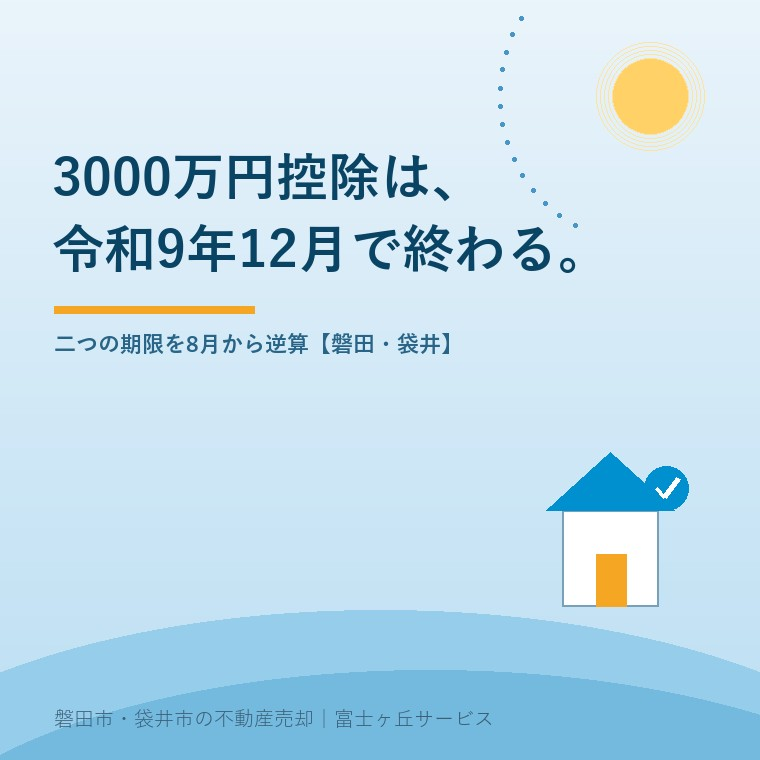

2026年8月17日｜カテゴリ：税と制度／相続空き家

この記事の要点
Q. 空き家の3,000万円控除は2027年まで使えると聞きました。まだ1年以上あるので、来年動けば間に合いますか。
A. ご実家の相続がいつ始まったかによって、答えが変わります。この特例には期限が二つあり、先に来るほうが本当の締切だからです。一つは制度そのものの期限で、国税庁は平成28年4月1日から令和9年12月31日までの間に売って一定の要件に当てはまるときと説明しています。もう一つが「相続の開始があった日から3年を経過する日の属する年の12月31日までに売ること」。2023年（令和5年）中にご相続があったお宅は、この3年の期限が2026年12月31日です。つまり残りは4か月半ほど。制度の期限より1年以上早く終わります。しかも「売る」とは引き渡しまで終わることで、その前に相続登記・家財の片づけ・買主探しがあります。8月に動き始めて、ぎりぎり間に合うかどうかという線です。逆に2024年以降のご相続なら、制度期限の令和9年12月31日が実質の締切になります。磐田市・袋井市では、介護施設の運営から不動産事業を始めた富士ヶ丘サービスのような「介護×不動産」専門の会社に相談するという選択肢があります。
お盆にご家族が集まって、実家の話が出た。そういうご相談を、この時期にたくさんいただきます。
そこでよく聞くのが、「税金の特例があるらしいから、それを使って売ろうと思う」という言葉です。空き家の3,000万円特別控除のことです。譲渡所得から最高3,000万円を引ける、相続した実家を売るときの大きな制度です。
ただ、続けて「2027年まで大丈夫でしょう」とおっしゃる。ここが、危ないところです。
この特例の期限は、一つではありません。制度の期限と、ご自身の相続に紐づく期限。二つあって、たいてい後者のほうが先に来ます。
今日は、2026年8月の今から、その二つを逆算します。制度の内容は、2026年8月17日時点で国税庁・国土交通省が公表している内容に沿って書きます。
国税庁の説明を、そのまま二つに分けます。
【期限その1／制度の期限】相続または遺贈により取得した被相続人居住用家屋または被相続人居住用家屋の敷地等を、平成28年4月1日から令和9年12月31日までの間に売って、一定の要件に当てはまるときは、譲渡所得の金額から最高3,000万円まで控除することができます。
【期限その2／あなたの期限】相続の開始があった日から3年を経過する日の属する年の12月31日までに売ること。
この二つは、どちらか一方ではありません。両方を満たす必要があります。だから、先に来るほうが実際の締切になります。
ご実家の相続がいつ始まったかで整理します。2026年8月17日時点の見方です。
| 相続開始（お亡くなりになった日） | 3年の期限 | 制度の期限 | 実際の締切と残り |
|---|---|---|---|
| 2023年（令和5年）中 | 2026年12月31日 | 2027年12月31日 | 2026年12月31日／残り約4か月半 |
| 2024年（令和6年）中 | 2027年12月31日 | 2027年12月31日 | 2027年12月31日／残り約1年4か月 |
| 2025年（令和7年）中 | 2028年12月31日 | 2027年12月31日 | 2027年12月31日／制度側で切られる |
| 2026年（令和8年）中 | 2029年12月31日 | 2027年12月31日 | 2027年12月31日／残りは1年余り |
表の下2段を見てください。2025年以降にご相続があったお宅は、3年を待たずに制度のほうが終わります。
「相続から3年あるから、まだ先」という感覚は、ここで通用しません。令和9年12月31日という線が、全員に等しく引かれています。期限が延長されるかどうかは、今のところ決まっていません。今ある制度で考えるなら、締切はこの日です。
期限の数え方そのものについては、以前「2027年まで」で安心していませんかの記事で書きました。あわせてご覧ください。
次に大事なのが、この期限が何をもって満たされるかです。
契約を結んだ時点ではありません。譲渡、つまり引き渡しまで終わっている必要があります。年末に契約して、年明けに決済──では、期限をまたぎます。
そして引き渡しの前には、これだけの工程があります。
| 工程 | 目安の期間 | 止まりやすいところ |
|---|---|---|
| 1. 相続登記（名義を相続人へ） | 1〜3か月 | 相続人が多い・遠方・意見が割れると一気に延びる |
| 2. 家財の撤去 | 2週間〜1か月 | 業者の予約が取れない。仏壇・写真で手が止まる |
| 3. 被相続人居住用家屋等確認書の取得 | 市区町村による | 書類が揃わない。電気・水道の使用中止日の資料など |
| 4. 売り出し〜買主決定 | 1〜6か月 | 価格。ここが読めないので全体が読めない |
| 5. 契約〜決済・引き渡し | 1〜2か月 | 買主の住宅ローン審査 |
| （6. 耐震改修または取壊し） | 1〜2か月 | 解体業者の空き。後述のとおり買主が行う方法もある |
足すと、順調にいって半年から1年です。
2023年にご相続があって、2026年12月31日が期限のお宅。今日が8月17日ですから、残りは4か月半。相続登記が済んでいれば、まだ手はあります。済んでいなければ、正直に申し上げて厳しい。
ただし「厳しい」は「無理」ではありません。相続登記が単純な構成（配偶者と子だけ、全員が合意している）なら1か月弱で終わることもあります。まず、そこを確かめてください。相続登記の段取りは相続登記の期限の記事にまとめています。
ここで、期限に効く改正を一つ紹介します。
この特例は本来、売る側が耐震改修をするか、家を取り壊してから引き渡すことが必要でした。古い家をそのまま売ると、使えなかったのです。
それが変わりました。国土交通省は、譲渡後、譲渡の日の属する年の翌年2月15日までに当該建物の耐震改修工事又は取壊しを行った場合であっても、適用対象に加わることとなったと説明しています。国税庁も、令和6年1月1日以後の譲渡について、譲渡の時からその譲渡の日の属する年の翌年2月15日までの間に、一定の耐震基準を満たすこととなったこと、または被相続人居住用家屋の全部の取壊し等を行ったことを要件として挙げています。
つまり、買主に壊してもらってもよくなった、ということです。
これは、期限が迫っているお宅にとって大きい話です。
この方法は、契約書に取り決めを書いておかないと成立しません。買主が「気が変わったので壊さない」と言えば、特例は使えなくなります。
期限も厳しい。譲渡の日の属する年の翌年2月15日までです。12月に引き渡せば、翌年2月15日まで。年末の引き渡しだと、解体の猶予は実質2か月弱しかありません。
買主が住宅を建てる予定であれば話は早いのですが、買主が業者ではなく個人の場合、この段取りを組めるかどうかは仲介の腕次第です。契約条項の作り方については、必ず税理士と、実務経験のある不動産会社に相談してください。
期限の話ばかりしてきましたが、そもそも要件を満たしていなければ意味がありません。年末に「使えませんでした」と分かるのが最悪です。
| 要件 | 内容 |
|---|---|
| 建築時期 | 昭和56年5月31日以前に建築されたこと |
| 建物の種類 | 区分所有建物登記がされている建物でないこと |
| 居住の状況 | 相続の開始の直前において被相続人以外に居住をしていた人がいなかったこと（老人ホーム等に入居していた場合も、一定の要件を満たせば対象） |
| 売却代金 | 1億円以下であること |
| 控除額 | 最高3,000万円。ただし令和6年1月1日以後の譲渡で、相続または遺贈により取得した相続人の数が3人以上である場合は2,000万円 |
| 必要書類 | 市区町村長から交付を受けた「被相続人居住用家屋等確認書」 |
ご兄弟が3人いらっしゃるお宅は、控除額の欄をもう一度見てください。令和6年1月1日以後の譲渡では、相続人の数が3人以上だと2,000万円になります。3人で分けるから一人1,000万円、という単純な話ではありませんので、金額の見込みは必ず税理士にご確認ください。
また、相続税の取得費加算の特例とは、どちらか一方を選ぶ形になります。相続税を納めたお宅では、どちらが有利かの計算が必要です。相続税そのものの期限（10か月）の逆算については相続税10か月の逆算の記事をご覧ください。
見落とされやすいのが、被相続人居住用家屋等確認書です。
これは、市区町村が「この家は要件を満たしています」と証明する書類で、確定申告に添付します。申請には、被相続人がその家に住んでいたこと、その後空き家だったことを示す資料が必要になります。電気・水道の閉栓を示すもの、除票、宅建業者が発行する広告の写しなど、自治体の運用によって求められるものが変わります。
申請先は、その家がある市区町村です。磐田市の空き家に関する相談は建設部 建築住宅課 住宅管理グループ（西庁舎2階・電話0538-37-4851）が窓口になっていますので、確認書についてもまずこちらへお尋ねください。袋井市についても、空き家を担当する部署へご確認ください。
この書類を、売却活動と並行して準備してください。買主が決まってから動き始めると、決済日に間に合わないことがあります。
地域の実情を書きます。
要件の「昭和56年5月31日以前に建築」は、磐田市・袋井市ではかなり広く当てはまります。市街地の外れや集落の中に建つ、瓦屋根で、玄関を入ると土間があって、南に縁側がある。ああいうお宅の多くが、この年代です。
逆に外れやすいのが、親御さんが平成に入ってから建て替えたお宅です。「古い家だから対象だろう」と思っていたら、実は昭和60年の建築だった、ということがあります。建築年月日は、登記事項証明書か、固定資産税の課税明細で確認できます。
もう一つ、この地域で引っかかりやすいのが「相続の開始の直前において被相続人以外に居住をしていた人がいなかったこと」です。三世代同居が珍しくない土地柄ですから、お父様が亡くなる直前に、同じ屋根の下にどなたかが住んでいたという場合があります。母屋と離れが別棟か同一家屋かという判断も絡みます。ここは自己判断せず、税務署か税理士にご確認ください。
家財が残ったまま売る場合の考え方は残置物と現況渡しの記事に、前面道路が私道のときの注意点は私道の通行・掘削承諾の記事にまとめています。期限のある売却では、こうした「止まりうる場所」を先に潰しておくことが効いてきます。
6番の「期限から逆算した価格」という考え方が、いちばん大事かもしれません。
期限のある売却では、高く出して様子を見る余裕がありません。3,000万円の控除を取り逃すことと、売り出し価格を最初から現実的にすること。どちらの金額が大きいかを比べて決めることになります。夏の売り出しと値付けの考え方は夏の売り出しの記事にも書きました。
当社は、磐田市見付で介護施設を運営するところから不動産の仕事を始めました。ご相談の入口は、たいてい「親が施設に入った」「親を看取った」です。
税の特例のご相談で申し上げているのは、「制度に合わせて暮らしを決めないでください」ということです。控除が使えるかどうかは大事ですが、それ以上に大事なのは、ご家族が納得して手放せるかどうかです。お盆に決まらなかったことを、期限を理由に無理やり決めても、あとに残ります。
そのうえで、使える制度は取りこぼさない。そのために、締切から逆算した表をお作りして、いつまでに何を終えるかを一枚にしてお渡ししています。
目指しているのは「高く売る」だけではなく、「家族が困らない売却」です。介護の見通し、相続の順番、そして税の期限。この3つを一度に見られることが、介護から始まった不動産会社の強みだと思っています。
価格の前に事実を整理する道具として、ふじがおか実家カルテを用意しています。実家じまいそのもののご相談は実家じまい相談室、相続の入口は相続はじめ相談室へどうぞ。
期限のある制度は、知らなかった方から順に取り逃します。けれど、慌てて売る必要もありません。まず自分の締切がいつなのかを確定させる。それだけで、動き方が決まります。
まずは、固定資産税の通知書と、亡くなった日が分かるものをご用意ください。それだけで、逆算の表を一枚にしてお渡しできます。
ふじがおか実家カルテ｜期限のある相続空き家の売却に対応します
締切から逆算して、動く順番を決めます。
住所と相続開始日をもとに、3,000万円控除の締切、建築年月日、名義と相続登記の状況、確認書に必要な書類、想定される売却期間を整理し、いつまでに何をすべきかを1枚にしてお出しします。作成料0円・入力約1分。申込みだけで売却依頼にはなりません。
本記事は2026年8月17日時点で国税庁・国土交通省・磐田市等が公表している情報に基づく一般的な解説であり、個別の物件や個別の申告についての判断を示すものではありません。空き家に係る譲渡所得の3,000万円特別控除の適用の可否、控除額、他の特例との有利不利、老人ホーム等に入居していた場合の要件、母屋と離れがある場合の判定、譲渡の日の考え方については、必ず税務署または税理士にご確認ください。買主による耐震改修・取壊しを前提とする場合の契約条項は、税理士および宅地建物取引業者と協議のうえ作成してください。被相続人居住用家屋等確認書の必要書類と交付手続きは市区町村によって運用が異なりますので、家屋の所在する市の担当課へお問い合わせください。制度は税制改正により変わる可能性があります。相続登記は司法書士へ、境界の確定は土地家屋調査士へご確認ください。個別のご相談は当社までどうぞ。

この記事を書いた人：大石浩之（宅地建物取引士）
磐田市・袋井市で「介護×相続×空き家」に特化した不動産売却支援を行う富士ヶ丘サービスの代表取締役・宅地建物取引士。介護施設の運営から不動産事業を始めた経験をもとに、売主とご家族が困らない売却を一件ずつお手伝いしています。プロフィール
磐田市・袋井市の実家じまい・相続空き家相談
固定資産税通知書だけでも相談できます
住所があいまいでも、通知書や写真から名義・道路・農地・残置物の確認順を整理します。カルテ申込またはLINEで状況を送ってください。
富士ヶ丘サービス株式会社／静岡県磐田市見付5789番地1／TEL:0538-31-3308／静岡県知事 (2) 第14083号／代表取締役・宅地建物取引士 大石 浩之